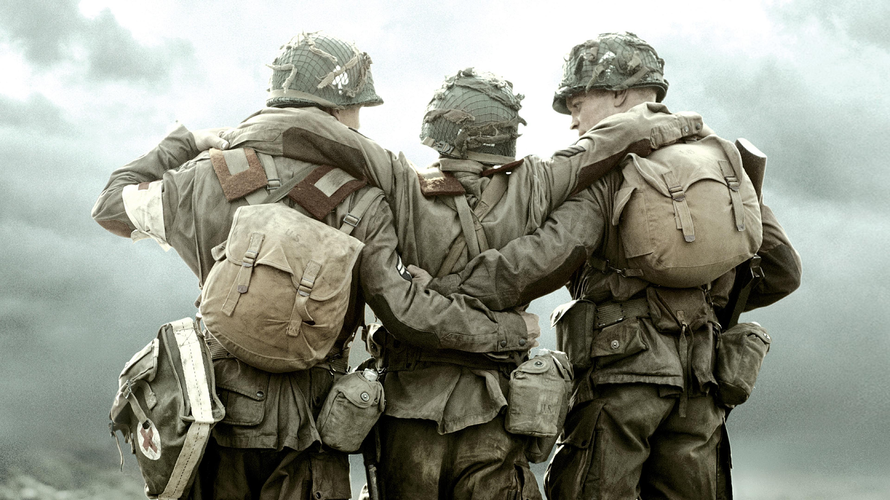

Reparto

El reparto de Band of Brothers incluye a varios actores destacados que interpretan a los miembros de la Easy Company. Algunos de los actores principales son:
- Damian Lewis como el Mayor Richard Winters
- Ron Livingston como el Teniente Lewis Nixon
- David Schwimmer como el Capitán Herbert Sobel
- Donnie Wahlberg como el Sargento Carwood Lipton
- Michael Fassbender como el Soldado Burton Christenson
- Tom Hardy como el Soldado John Janovec
- James McAvoy como el Soldado James Miller